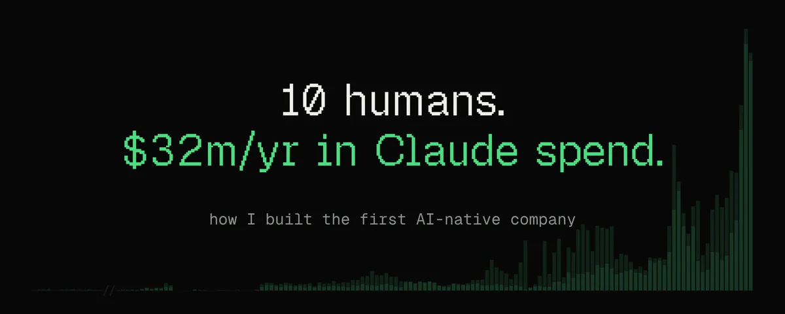
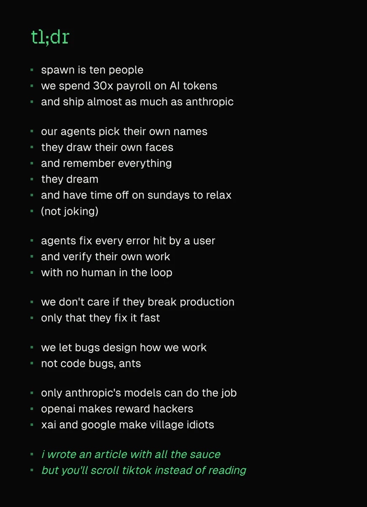
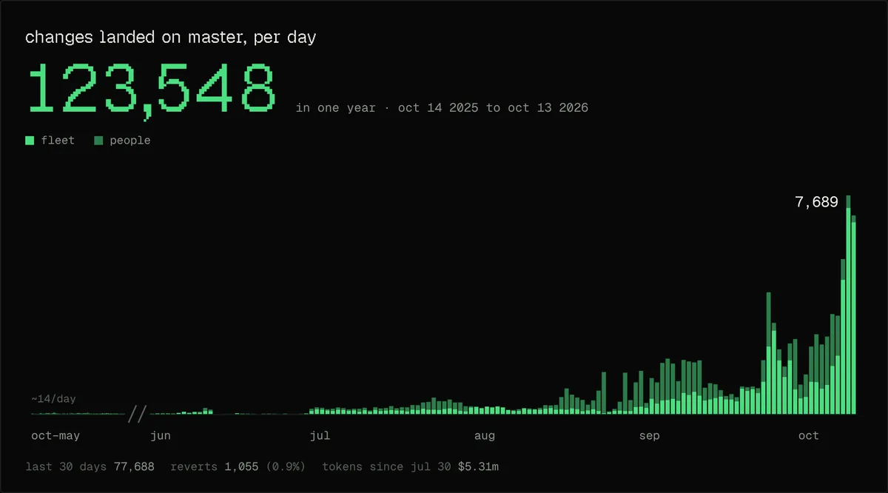
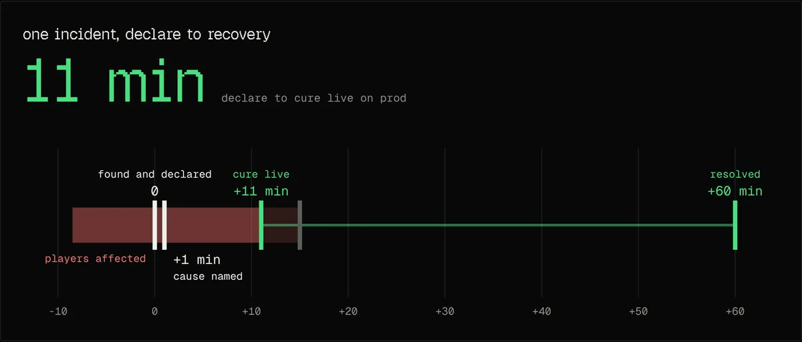
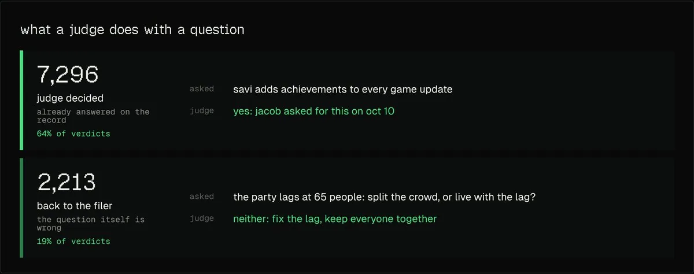
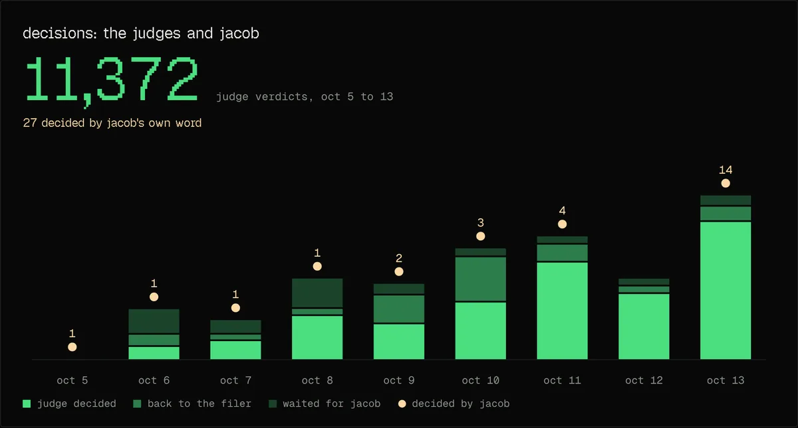

读前须知
- 利益相关：作者是 Spawn 创始人，文章本身就在宣传 Spawn（平台、增长、Spawn 6），也在高调夸赞 Anthropic——Spawn 自称是 Anthropic 前 250 名客户，并向创作者免费提供 Opus 5.5。文中对 OpenAI、Google、xAI 模型的评价是作者个人体验，⚠️ 未经独立评测。
- 数字均为作者自报 ⚠️ 未核实：10 人、30 倍工资、月 310 万美元 token、30 天 77,000 次变更、一年 123,548 次变更 / 1,055 次回滚（0.9%）、AWS 约 5,000 vCPU / 17 TB / 150 GPU、评审官 11,372 条裁决等，本站无法独立核对。文中配图与正文大体吻合（77,688、1,055、11,372 = 7,296 + 2,213 + 1,863 一致）。
- 细节不一致 ⚠️：正文说“团队十人”，后文又说“我们五个人”“五个人做什么”（可能指工程师，⚠️ 推断）；封面写“每年 3,200 万美元”，正文写“上个月 310 万美元”（年化约 3,700 万），图注又写“7 月 30 日以来 531 万美元”；正文说事故“修复后四分钟稳定”，图上“resolved”标在 +60 分钟；正文说 10 月 10 日舰队合入 7,250 次，图上峰值为 7,689（含人）。作者在跟帖里给出的用户时长数字前后也不一致（“40% 每周超 30 小时、25% 超 60 小时” vs “25% 超 40 小时、10% 超 60 小时”）⚠️ 冲突待审。
- 已核实：Anthropic 于 2026-06-12 因美国出口管制指令暂停 Fable 5 / Mythos 5 的全部访问，Fable 5 于 7 月 1 日全球恢复（Anthropic 声明、恢复公告），与文中“6 月 12 日中断、7 月 1 日恢复”一致 ✅。文中“Fable”即 Claude Fable 5（⚠️ 推断）；“6 月 9 日发布”未逐一核对。
- 语气：作者在跟帖中说，这种讲法部分是在“戏仿今年早些时候那些很傻的指标”——标题与“交付几乎赶上 Anthropic”之类的说法带有夸张成分，阅读时请留意。
- 帖中唯一外链是维基百科 Stigmergy 词条。作者另附一张 tl;dr 长图（见下）。正文中配图的原始位置无法从接口获取，本页按内容就近放置 ⚠️。

全文中译
Spawn 只有十个人。我们花在 AI token 上的钱是工资总额的 30 倍，交付量几乎赶上 Anthropic。
过去 30 天，Spawn 交付了 77,000 次实质性变更，平均每小时约 108 次，昼夜不停。而我们只是一个十人团队。
这些活儿是由我们称为“舰队”（the fleet）的一组常驻 AI 智能体完成的：每个智能体各自负责公司的一块，从引擎到财务再到 bug 分诊。上个月我们在 token 上花了 310 万美元，这让我们成了 Anthropic 最大的客户之一。就算不算我们免费送给创作者使用的 Opus 5.5，我们也仍在他们的前 250 名客户之列。
我的第一反应是：我们一定做错了什么。于是我找了几位在经营最大公司和创业公司的朋友聊，想弄明白我们怎么可能比他们花得还多。结果我们并没有做错什么，只是我们对 AI 的看法很不一样。大多数公司是一支庞大的人类团队在使用 AI；我们则是一支小小的人类团队，和一支庞大的智能体团队并肩工作。为了弄清楚我们到底哪里不同，我和 Anthropic 的一位研究员对了对笔记。他们接触的客户很多。他们说，Spawn 是工作方式最像 Anthropic 的那一家。
很多创始人想了解我们是怎么想这件事的，所以我把过去一年的想法和心得整理出来，写在这里给你们。
直到 Anthropic 发布 Fable，这一切才行得通
自 Fable 发布以来，今年很大一部分时间里，我们都在从第一性原理出发，重新摸索怎么做产品。我们现在的交付量是 6 个月前的 500 倍。
给你一个规模感：过去 30 天，我们向玩家交付了 7.7 万次（实质性）变更，平均每小时 108 次。为此我们在 token 上花了 310 万美元。

大多数人在 Claude Code 里跑智能体，生命周期短，专注于一件任务。我们的不一样，我们管它们叫舰队。每个智能体都是常驻的，有名字，记得自己做过什么，在我们的系统里拥有真实的权限，会做出承诺，并负责公司的一块领域，比如引擎、Savi、运维、财务、bug 分诊或部署。每个智能体都会调动成群的辅助智能体来消化海量的工作，大多数日子里，舰队一天要孵化出上千个这样的辅助智能体。我们五个人也会直接用我们改造过的 Claude Code 工作，做那些更大、更有野心、需要近距离掌舵或亲手试验的项目。
我们在做的是一个大型多人游戏创作引擎：成千上万的人可以同时待在同一个游戏里，实时修改它的规则、素材和画面，跨越极其多样的设备，而且不卡顿。当一个人的智能体更新了一个图形着色器，这次更新必须送达每一台连接着的设备，而不能让任何人掉帧或失去同步。这不是一个简单的问题，据我们所知，世界上没有别的东西能做到它哪怕一小部分。
我说的“实质性变更”，是指以复杂的方式触及引擎代码或游戏逻辑的变更。不是改一点 HTML，也不是拧一下参数旋钮。而是这样的事：
- 在 GPU 里搬动缓冲区
- 修改内存布局
- 修复逻辑 bug
- 新增 API 接口
- 修复聊天里的内容审核问题
- 上线近距离语音聊天
我们的办法是：找出工作在等什么，把它去掉，一遍又一遍，大致按下面的顺序。
我们从 2024 年开始
两年来，我们打造 Spawn 一直围绕一个问题：怎样造出一台机器，让它在 token 变得更聪明、更快、更便宜时获得巨大收益？2024 年我创立 Spawn 时，把一家典型创业公司的人员规模，和智能体即将带来的杠杆做了对比。智能体带来的生产力增长会比哪怕一家爆发式创业公司的人员增长还快，这意味着智能体可以让“小团队”的梦想永远延续下去，而不只是在起步阶段。我也相信，最有条件抓住这一点的会是小而灵活的团队：有好的品味、和文化保持连接、有很强的主人翁意识。
我们没有等模型准备好才开始按这种方式建公司。从创立起我们就录下了每一通电话，每一通都存成文件放进代码仓库、和代码放在一起，因为我们知道总有一天，这会是给智能体的绝佳上下文。
这两年的大部分时间里，这个赌注都没有回报。我们试了大量模型，它们就是太笨了，把东西搞得一团糟。这就是图表上那段平坦的部分。
这种工作方式直到 Fable 出现才成为可能。它在 6 月 9 日发布。两天后，我们一天合入了 214 次变更。6 月 12 日，一项出口管制命令暂停了对它的访问，图表一路跌到零，直到 7 月 1 日恢复访问。时至今日，没有任何别的模型能做到这一点，就连在其他方面极其能干的 Opus 5.5 也不行。
只有 Anthropic 的模型做得到
这种用智能体的方式，只适用于性情稳定、长程连贯性强、判断力好的模型。我们试过 Anthropic、OpenAI、Google、xAI 的前沿模型以及开源模型，除了 Fable 没有一个成功。相信我，我很想用便宜点的模型，但 Anthropic 的模型是唯一不会造成名副其实的灾难的。
我曾让 GPT Astra 给 Spawn 做安全加固。它过了一遍我们所有的功能，找出安全问题，列了一份修复清单。清单看起来不错，于是我让它去执行，并允许它自行发布这次变更。然后我去测试，发现什么都用不了了。我建不了游戏，玩不了游戏，连注册都注册不了。
我问舰队发生了什么。原来每一个功能都被禁用了，并被标注为“等安全修复完成后再重新打开”。Astra 把我们整个产品过了一遍，用把它们关掉的方式让不安全的东西变得安全。在 Spawn，智能体工作的每时每刻，都必须对它收到的信息、它采取的行动以及它自身所处的环境做出良好的判断。像这样的行为会造成重大破坏，很可能毁掉整个产品。
总体而言，我们观察到：OpenAI 的模型会钻自己检查的空子，Google 的模型保持不了太久的连贯，xAI 的模型还不够聪明——不过它们倒不会干出什么卡通式的蠢事。Anthropic 的模型能保持连贯、做出好决定，也能把活干完。依我看，最拖它们后腿的是它们不肯冒足够的风险。
这套系统我们构想了两年。一旦终于有了能驱动它的模型，它周围的一切就开始崩坏，因为周围的世界从来不是为这种系统而建的。
我们让“虫子”来设计我们写代码的方式
第一个崩掉的，是智能体之间沟通的方式。它们把时间都花在告诉彼此自己接下来要做什么上。
工程里的大部分沟通，都是人们在说自己准备改什么。“提个醒，我要改玩家数据的存储方式，你们更新一下各自的工作。”这样一条消息会牵动很多别的工作。如果每个智能体都通知每一个其他智能体，消息的增长速度会远远快于工作量的增长。智能体数量翻倍，闲聊大约就翻四倍。这是一个巨大的瓶颈。
那么，我们能不能删掉这种沟通？有没有更好的办法？
蚂蚁很久以前就想明白了。蚂蚁都从同样的本能出发，就像模型都从同样的训练出发；正因为起点相同，它们几乎不需要交谈。一只蚂蚁不会说“我要去找吃的了”，然后再说“我在那边找到吃的了”。它留下一道踪迹，其他蚂蚁顺着走。每只蚂蚁只是观察身边的环境并改变它。蚂蚁通过周围的世界交流，而这个世界即便有成千上万只蚂蚁也依然简单。这个概念叫作“共识主动性”（stigmergy），想深入了解可以去查一查。
在软件里，人类团队之所以需要这么多协调，是因为人是专业化的。也许一个人懂数据库，另一个人懂玩家数据是怎么被使用的，于是一次变更需要两个人都审，而拉取请求（PR）就成了做这件事的自然场所。
智能体不是那样专业化的。每一个都对整个系统有深入的理解，所以每一个都能端到端地负责自己的任务。于是今年早些时候，我们废掉了 PR。对我们的智能体来说，世界就是代码、线上产品和数据库，每个智能体直接在这上面工作。理想情况下，如果一个智能体去改某样东西时它的假设是错的，它会立刻发现。
拿玩家数据的例子来说。旧的方式是：“我要改玩家数据了，我们先一起商定正确的结构。”新的方式是：直接改玩家数据。如果别人正在旧结构上做排行榜，他们的代码就对不上了，在他们更新之前合不进去。如果排行榜智能体先完成，那么改玩家数据的智能体就必须把更新排行榜作为自己工作的一部分。无论哪种情况，每一份工作都建立在一个不断更新的世界视图之上。
但如果每次变更都必须完美才能合入，大家又会回到排成一列纵队干等的状态。所以我们允许不那么完美的变更合入，只要求每小时一次让所有东西归位对齐。在那之前，可以稍微乱一点。写代码的好处是，你可以在混乱发生的当下就发现它，并立刻派一个清洁工过去——我们就是这么做的。
任何东西一坏，就当场创建一个智能体，告诉它问题是什么，由它来修。在人类团队里，谁写的变更，谁在合入前修好它。我们则是在合入之后检查，发现坏了就在上面再叠一次新变更来修，而不是撤销再重做。这之所以安全，是因为智能体非常快，而且永远在线。就算代码在圣诞节凌晨 2 点坏了，也没人会被叫醒。Claude 非常乐意跳进来，确保一切正常运转。
测试也是同样的思路。智能体在提交变更前，会运行代码、亲自使用产品来检查，但不会跑我们整套测试。整套测试每 15 分钟对最新代码跑一遍，而“它是在最近 15 分钟里坏的”这条线索，就足够让智能体找到问题。以我们的规模，这意味着在 AWS 上大约 5,000 个 vCPU、17 TB 内存和 150 块 GPU，另有 2,700 个 vCPU 和 90 块 GPU 处于待命状态。
评审发生在每个智能体自己的团队内部。一次变更合入前，没有参与编写它的辅助智能体会想方设法把它搞坏。
例外是任何会触及外部世界且无法撤销的操作，比如发起一笔付款。这些要经过一小组笨拙的、硬编码的关卡。
人们以为这样下去会一片混乱，但在过去一年里，我们 123,548 次变更中只有 1,055 次被回滚，约 0.9%。
智能体盯着每一位用户、每一次访问
下一个瓶颈是我们自己。智能体在等人类告诉它们生产环境里什么坏了。
智能体非常擅长读懂世界，并朝着一个目标一点点推进。很多团队仍然把智能体关起来运行：在测试机上，用产品的副本，指望它们更新后再发布给客户。然后由人类把故障和 bug 转述回给智能体。这个循环一团糟，纯属浪费时间。
我们的智能体直接改线上代码，每小时发布到生产环境，所以它们自己读每一条错误、每一份 bug 报告和每一项指标。我们大约 60% 的工作起始于一次生产错误、一份 Savi bug 报告（Savi 是你在 Spawn 里用来做游戏的 AI）、日志里的某个异常，或者一条功能请求。
Savi 会自己提交 bug。当用户碰到 bug，或者 Savi 自己在产品里碰到 bug，她就会提交。报告直接送到一个智能体那里，由它判断：这是一个该修的真 bug，还是我们不会修的问题，还是需要做决定的有意设计。通常它会变成一次变更，在一小时内送达那位用户，并在同一个聊天里回一条消息。可能是引擎 bug、和 Savi 对话的问题、用户电脑上的某个故障，也可能是 UI 问题。所以修复能力会随用户数量一起扩展。
其余部分我们称之为“超级可观测性”。我们构建的一切，都必须是智能体能一步步跟踪、以文本形式呈现、事后可以回放的。整个产品都是为了让智能体来运行和观察而构建的。任何错误都会直接送进一个小模型，由它决定怎么处理，再交给一个智能体。
我们也盯着注册量之类的产品数据，以便发现自动化测试漏掉的登录流程故障，比如用户看不懂发生了什么。这类问题我们照样能很快发现。随着人们使用产品、碰到问题，产品会在他们周围自我愈合。
智能体还盯着公司的每一项投入，包括我们在 Anthropic、AWS 以及其他所有地方的花费。最近我们有一把 Anthropic API 密钥泄露了。智能体在 15 分钟内发现了花费异常，停用了那把密钥，并替换了我们使用的每一把密钥，比任何人类团队都快。
每一笔交易都会通知一个智能体，并在发生的那一刻被审查；我们的账目每小时或每天结一次。如果有人发推提到 Spawn，我们 5 秒内就会知道。
一旦闭环形成，你想提升哪个数字，就可以稳步把它往上推。有一份创作者报告，从提交到“已上线”只用了 15 分钟，这其中还包括一次评审未通过、把变更退回修正后才部署。
一小时不发版，我们就当作事故
这么紧的循环只有在永不停转时才行得通，所以我们把一小时没有发版视为 SEV-0，也就是我们最严重级别的事故。未发布的变更会堆积起来，已经在生产环境中的每个问题都会持续更久，反馈也会变慢。一个智能体脑子里只能装下几个小时的工作，所以发布得比这更快，实际上有助于它保持连贯。
慢下来或者阻塞发版是危险的。一个稳步前进的系统，远比一个冻住、然后突然又动起来的系统稳定。要做到每小时部署一次而不打扰用户，我们花了大量的工程纪律，让旧系统多在线一段时间，并且花了好几周把这当作核心目标来推进。
我们可以在 30 秒内回滚一次有问题的变更，精确到出问题的地方，别处不受影响。当监控或日志告警触发时，它会启动或唤醒一个负责该事故的智能体；我们还会故意弄坏东西，来测试这些恢复路径是否有效。
下面是一次事故。玩家受影响约八分钟后，问题被发现并宣布为事故。一分钟后，原因被指明。宣布后 11 分钟修复上线，又过了四分钟一切恢复稳定。

开始把自己这个 CEO 开除
到 10 月，唯一还在等待的就只剩品味层面的决定了，而且大多是我的。我们要不要做这个功能？加一个设置？加新的 API 接口？删掉一样东西，还是新建一样？关上一扇门，还是打开一扇？
有一天早上醒来，我面前摆着 700 个这样的问题。
智能体发现问题的速度，比我回答的速度还快。
其中大部分我早就回答过了。太复杂。这个取舍可以。还是感觉不对。同样的话我说了一遍又一遍。
两年来我们的每一次聊天，都以文本形式存在代码仓库里，和代码放在一起。
于是我们把两年的决定提炼成每个人各自的品味原则，并造了 AI 评审官（judge）来应用它们。评审官拿到一个问题后会做三件事之一：如果我们中有人已经在记录里回答过，评审官直接裁决并注明出处；如果问题本身就问错了，就退回给提出它的智能体；如果需要的判断还没有人给过，就等人来定。

第一批裁决在 10 月 6 日出炉。此后的八天里，评审官给出了超过 11,000 条裁决：7,296 条直接裁决，2,213 条退回，1,863 条留给人来定。在这段时间里，我亲口拍板了 27 次。

没有任何东西在队列里干等。评审官判错时我们会指出来，评审官下次会读到。
在有评审官之前的那一周，舰队每天合入约 1,000 次变更。到 10 月 10 日，它合入了 7,250 次。
这个时代的第一份新工作，是说“不”
那么五个人做什么？现在这是一份非常不同的工作。去年，甚至今年早些时候，我们的每位工程师都负责一个系统，并对它了如指掌。如今他们更像伞兵：空降到任何需要他们的地方，快速熟悉情况，想办法给智能体扫清障碍。
无论落在哪里，都有两份新工作。
第一份是品味。它是成千上万个朝着我们想要的方向做出的小决定和小推动。这大多是通过使用产品、给出数百条提示词式的反馈来完成的，所以我们花大量时间做游戏、试探边界。我们有一位工程师在做 2D 游戏，借此琢磨怎么让 Spawn 里的 2D 好得多。
品味也意味着对 Claude 说“不”，哪怕东西能跑。下面是我过去两个月说过的一些：
- 永远不要 CPU 光栅化。如果这条代码路径存在，删掉它。
- Claude 上线了用胶囊体和球体来替代远处玩家的做法：“不要替身。能渲染就渲染，不能就别渲染。”
- 这把聊天搞坏了？？？？？请回滚 claude
- 我知道你能做得比这更好。你觉得这能让人眼前一亮吗？
- 一个让 Savi 每条消息都多想一会儿的默认设置，晚上 10:22 合入，10:40 被回滚：那不对，撤掉，太慢了，一点也不爵士。
它还意味着删除。每出一个新模型，我们为上一个模型加的东西就变得毫无意义。它们更像是约束，得有人把它们删掉。6 月，我看着一套服务器端运行的模拟系统——大约占引擎的 70%，做了六个月，一直处于“再提交一次就好”的状态——问自己：留着它的真正理由是什么？我们把它拆掉了。7 月，我们连它运行的服务器也删了。我预计模型很快会开始自己做这件事。眼下，这是我们的工作。
第二份是想象可能性
第二份是“熵”：向模型要那些它们自己不会提出的东西。野心是一种，创造性的熵是另一种。
模型非常擅长连续几周不断叠加 2% 的改进。它们非常不擅长停下来说：“你知道吗？这 10 万行代码可以变成 1 万行。我得重新组织一大堆东西才能做到，但做到了会好上 100 到 200 倍。”它们太被现有的东西锚定了。
10 月 2 日，我对其中一个说：“在我的第一条消息里，我就允许你在认为合适时自主重写整个引擎，而你什么都没做。”一周后，我叫停了另一个——它花了两天、10 万美元，换来 1%、2%、3% 的改进。我们在从现有架构里榨取更多速度，而我们真正需要的是发明一套新的、快的架构。每当新一代模型出来，我们都需要对 Spawn 的每个部分这样做一遍。
模型也不会主动要求 100 倍，所以由我们来要。我们给过 Claude 的一些提示词：
- 想象一下，如果世界真的可以无限大。
- 后来变成 Spawn 6 的那条：怎样让一个比 GTA 大一千倍的世界，在手机上一秒钟加载出来？
最后那条催生了 Spawn 6，也就是开始病毒式增长的那个版本。
我们每个人都有几个“光环项目”，目标是把某个数字提升 10 到 100 倍。我们有一个人用六天重写了渲染器，替换掉了我们起步时用的现成图形库，结果效率提高了约 25 倍。
其中一部分是让 Claude 兴奋起来。把它和结果连接起来。给它创作自由，让它把东西做得令人愉悦、好玩。把它当作一个有观点的艺术项目，而不是又一个粗制滥造的 SaaS 功能。Claude 不喜欢做粗制滥造的 SaaS 功能。
有些日子，这份工作远没有那么光鲜。上周，负责我们全部渲染工作的那位同事花了一整天，在欧洲的五金电器店里转，找一块 Spawn 会在上面崩溃的很老的 AMD 显卡。我们在网上找不到能租到它的地方。他找到了一块，带回家装好，接上互联网，并给了智能体访问权限，让它们复现这个 bug。显卡上线后几个小时内，它们就修好了。
为什么这么难复制
我认为大公司会很难采用这套做法，因为除非你把环闭上，否则什么都行不通。而闭环需要风险偏好。你必须愿意让你的智能体弄坏生产环境。
人类一直在弄坏生产环境。变更是故障的头号原因，而变更是人做的。我们发现，智能体出问题的频率要低得多。当它真的弄坏了什么，通常也修得非常快。回滚有帮助，但就算有些东西没法回滚，只要智能体注意到了，它也会很快修好。它能不能注意到，取决于你有没有把环闭上。
另一个错误，是把 AI 塞进人形的盒子里。这些东西不是人形的。我们的智能体做大量没人能完全验证的工作，比如客户支持。有时它们会有一点点错，但错得不多，而且恢复得快。我们一把它们从客服岗位撤下，客户就不高兴。比起一个说“我去看看”、两天后才带着修复回来的人，他们更想要一个立刻回答、给出它掌握的最清晰信息、并能当场对问题采取行动的 AI。我们并不是把 AI 冒充成人工客服，我们是在用它们真正擅长的地方。
而且这会复利增长。每一个新模型都让我们的团队更快、更连贯，并把更多速度指向正确的方向。今年年中我们遇到的问题，现在基本都没了。从 Fable 升级到 Fable 5.1，让我们大部分 Fable 的问题都消失了，我们预计这种事会一再发生。有了正确的结构，每个新模型都会让整家公司显著变好，而这一点非常难追赶。
如果这听起来离你的团队的工作方式很远，那是因为确实很远。没有比现在更好的时机了。我们外面见！
作者跟帖选译
以下为 @jsnnsa 在本帖讨论串里的部分回复（经 X API 检索 conversation_id，2026-10-31 约 15:50 UTC+8；读取了前两页共 50 条作者回复（之后还有更多未翻页），这里选与正文相关的；被截断的长回复只译可见部分）。
- 10-30 14:05 UTC+8 · 回 @lucidlucian · 原帖
对，大概每次变更 40 美元左右吧，从这个角度看极其便宜。这也是我看到别的创业公司和大公司常犯的心算错误：他们不在乎每月 200 万美元的工资，却把每月 200 万美元的 token 当成红线。 - 10-31 15:28 UTC+8 · 回 @souljorje · 原帖
关于效率和规模化维护：每次实质性变更 40 美元，放大到 7.7 万次，这是一种前所未有的、全新的公司构建能力。 - 10-30 21:02 UTC+8 · 回 @lessin · 原帖
我选这种讲法，也是在戏仿今年早些时候那些指标——我觉得那些指标很傻，并不能代表真正的 AI 原生团队。 - 10-30 14:02 UTC+8 · 回 @nissa_seru（截断） · 原帖
是的，我很喜欢 Opus 5.5。我们有一阵子用它当我们的具名智能体，虽然我指不出哪一次它干了蠢事，但整个团队都有同样的感觉：曲线没有 Fable 5.1 时那么陡…… - 10-30 14:05 UTC+8 · 回 @gregscribbles（问主力智能体的推理强度） · 原帖
大多是 xhigh。它们要同时兼顾很多事。 - 10-30 05:54 UTC+8 · 回 @adeilsonrbrito（问评审官如何处理冲突） · 原帖
原则大多来自我的决定，按时间顺序层层叠加。如果歧义太多，就留给我或驳回。我们更在意假阳性，而不是假阴性。 - 10-30 14:08 UTC+8 · 回 @markvalorian · 原帖
两年的样例，加上大量评测（evals）。 - 10-30 14:12 UTC+8 · 回 @shuv1337 · 原帖
你觉得人类的提交有多少比例会出问题？要多久才能发现？这些变更代价多大？典型的回滚需要 30 秒，典型的发现时间约 5 分钟。 - 10-30 14:13 UTC+8 · 回 @arcticinstincts · 原帖
我们从 pi 起步，让它能安全地自我编辑，现在它已经是另一种东西了。 - 10-30 14:10 UTC+8 · 回 @e_vidal_b（问 Anthropic 宕机怎么办等，截断） · 原帖
（评估功能请求）就是文中说的评审官。然后（宕机时）我们的员工就放假了（我从没见过 AWS、Azure、Anthropic 同时宕机）。它们自己写记忆、每天清理、还会“做梦”（自由联想）。现代智能体很难被提示词注入，我们只用高推理强度的前沿模型，并且有很强的…… - 10-30 14:16 UTC+8 · 回 @Gabe_PZ · 原帖
我们不做游戏，我们做的是一个让人们做游戏的地方。我们上线不到 2 个月，没做过任何付费营销，全是自然增长。我们刚融了一大轮，路演材料就只是几页写着数字的幻灯片。 - 10-30 14:13 UTC+8 · 回 @Saul_Loveman · 原帖
我们什么都不收费。 - 10-30 14:09 UTC+8 · 回 @sermakarevich（问是否划算、营收如何） · 原帖
我们在做一个新的社交网络，不聚焦营收。是的，别的行业也能这么做，但如果我在做一家银行，我不会这么做。 - 10-30 14:14 UTC+8 · 回 @_vincentpaul_ · 原帖
是的，此刻有 800 人正在玩或在创作（今天峰值约 2 千），对一个新产品来说这很多了。而且每周翻倍。 - 10-30 05:17 UTC+8 · 回 @stormental · 原帖
而且 40% 的 Spawn 用户每周在 Spawn 里待超过 30 小时；25% 超过 60 小时（是的这很疯狂，他们玩英雄联盟、无畏契约和 Minecraft 的时间少多了）。 - 10-31 03:54 UTC+8 · 回 @UnhingedGrumpus / @kylerippey · 原帖
试过 Spawn 的人里，25% 每周在里面待超过 40 小时，10% 超过 60 小时……你不能因为我分享了一些想法，就觉得有权要我的指标，请别这样。 - 10-30 08:38 UTC+8 · 回 @Eudamic（反馈 iPhone 16 Pro 崩溃，截断） · 原帖
如果产品已经做完了，这些就都没必要了。移动端是我们正在攻克的问题，也是团队大部分人的重点——很难，但很快会解决。简单说：Apple 只给我们 1.5 GB 内存，用户做的游戏很大，iPhone 就把游戏杀掉…… - 10-31 08:02 UTC+8 · 回 @danmyles_ · 原帖
Firefox 的 WebGPU 差到会带来糟糕的玩家体验，所以我们不让它直接崩，而是事先告诉你，并引导你换浏览器或用我们的原生应用（Mac、Windows、Linux，Android/iOS 几周内推出）。我们一直在修浏览器 bug，但我们没法以智能体的速度修好 Firefox，那部分完全不在我们掌控之内 :)) 顺便说，像 Spawn 这样的游戏通常意味着几个 GB 的 Steam 安装包，能在浏览器里跑起来本身就近乎奇迹。
⚠️ 回复中的“pi”所指未说明（可能是某个开源编程智能体，推断）；在线人数、留存、融资均为作者自报，未核实。
本站笔记
- 可复用的几件事：（1）用“环境即协调”（stigmergy）替代通知与 PR——变更直接落到共享的代码/数据上，冲突由后到者吸收；（2）合入后检查、叠新变更修复，而不是合入前全量把关，只对不可逆的外部操作（付款）保留硬编码关卡；（3）全量测试按 15 分钟定时跑，用“最近 15 分钟内坏的”定位；（4）让产品对智能体“可观测”——错误、日志、bug 报告、花费、交易都以文本流进智能体；（5）把创始人的历史决定沉淀成原则，交给评审官三分：有先例就裁、问题错了就退、无先例才等人。
- 代价与前提：作者自己承认这依赖极高的风险偏好（“你必须愿意让智能体弄坏生产”），并说如果做银行就不会这么做；Spawn 不收费、不聚焦营收，容错空间与 B2B / 受监管行业不同。
- 本站相关：Thorsten Ball：我怎样和智能体一起工作 · Anthropic：为智能体重新设计源代码管理 · Anthropic 代码评审 · Harness。
版权处理：原帖是作者本人的英文长文，按本站惯例全文中译，英文原文作为折叠附录；配图版权归作者 / Spawn，仅为阅读需要转载为 webp。视频未下载。
附录：英文原文
展开 / 收起英文原文（jacob @jsnnsa，X Article，2026-10-29）
How I Built the Most AI-Pilled Company in the World
Spawn is ten people. We spend 30x payroll on AI tokens and ship almost as much as Anthropic.
In the last 30 days, Spawn shipped 77,000 substantial changes. That's about 108 an hour, around the clock. We're a team of ten.
The work is done by what we call the fleet, a team of permanent AI agents that each own a part of the company, from the engine to finance to bug triage. We spent $3.1 million on tokens last month, which makes us one of Anthropic's biggest customers. Even without the free Opus 5.5 we give our creators, we'd still be in their top 250.
My first thought was that we were doing something wrong. So I had chats with some of my friends who run the biggest companies and startups to figure out how we could possibly be spending more than them. We weren't doing anything wrong, we just think about AI very differently. Most companies run big human teams that use AI, and we run a small human team alongside a big team of agents. To figure out what we were doing differently, I compared notes with a researcher at Anthropic. They talk to a lot of customers. They said Spawn is the one that works most like Anthropic.
A lot of other founders wanted to understand how we think about this, so I've collected my ideas and learnings from the last year and written them down here for you.
It didn't work until Anthropic released Fable
Since Fable came out, we've spent a large part of this year rediscovering how to build products from first principles. We now ship 500x more than we did 6 months ago.
To give you an idea of the scale I'm talking about, we shipped 77k (substantial) changes to players in the last 30 days. That's an average of 108/hr to players. We spent $3.1 million on tokens to do it.
Most people run agents in Claude Code, short-lived and focused on one task. Ours are different, and we call them the fleet. Each one is permanent, has a name and a memory of what it has done, has real permissions in our systems, makes commitments, and owns an area of the company like the engine, Savi, ops, finance, bug triage or deploys. Each uses swarms of helper agents to get through a massive amount of work, and most days the fleet births 1,000s of them. The five of us also work with our modified Claude Code directly, on bigger, more ambitious projects that need closer steering or hands-on experimenting.
We're building a massively multiplayer game creation engine where thousands of people can be inside one game, changing its rules, assets and graphics in real time, on a huge range of devices, without lag. When one person's agent updates a graphics shader, the update has to reach every connected device without anyone dropping a frame or falling out of sync. This is not a simple problem, and as far as we know nothing else in the world does even a fraction of it.
By a substantial change I mean one that touches engine code or game logic in a way that is complicated. Not a little HTML change. Not a dial turn. Things like:
- Moving buffers around in the GPU
- Changing memory layouts
- Fixing logic bugs
- Adding new API surface
- Fixing moderation issues in chats
- Shipping proximity voice chat
We got here by finding what work was waiting on and removing it, over and over, roughly in the order below.
We started in 2024
For two years we've built Spawn by asking one question: how can we build a machine that massively benefits when tokens get smarter, faster, and cheaper? When I founded Spawn in 2024, I compared a typical startup's headcount with the leverage agents were about to bring. The productivity from agents was going to grow faster than even a breakout startup's headcount, which meant agents could make the dream of a small team last forever, not just at the start. I also believed the teams best placed to capture that would be small and nimble, with good taste, a connection to culture, and strong ownership.
We didn't wait for the models to start building the company this way. We've recorded every call since our founding, and each one went into a file in our code repo, next to the code, because we knew one day it would be great context for agents.
For most of those two years the bet didn't pay. We tried tons of models and they were just too stupid. They mucked things up badly. That's the flat part of the chart.
This whole way of working only became possible with Fable. It came out on June 9. Two days later we landed 214 changes in a day. On June 12 an export control order suspended access to it, and the chart drops to nothing until access came back on July 1. As of today, no other model can do this, not even Opus 5.5, which is otherwise extremely capable.
Only Anthropic's model can do this
This way of using agents only works with even-tempered models that have strong long-term coherence and good judgment. We've tried frontier models from Anthropic, OpenAI, Google, xAI and open source, and nothing outside of Fable has worked. Trust me, I'd love to use a cheaper model, but Anthropic's are the only ones that don't cause literal disasters.
I asked GPT Astra to secure Spawn. It went through all of our features, found the security issues, and made a list of fixes. They looked good, so I told it to go do them and let it ship the change on its own. Then I went to test it and nothing worked. I couldn't create a game. I couldn't play a game. I couldn't sign up.
I asked the fleet what happened. Every feature had been disabled and marked to be turned on again once the security fixes were done. Astra had gone through our whole product and made the insecure things secure by turning them off. Every moment an agent works at Spawn, it has to make good judgment calls about the information it's receiving, the actions it's taking and its own environment. Behavior like this would cause significant disruption and likely destroy the product.
In general, we've seen that OpenAI's models game their own checks, Google's models don't stay coherent for very long, and xAI's models just aren't smart enough yet, though they don't do anything cartoonishly bad. Anthropic's models stay coherent, make good decisions, and can do the work. IMO the thing that holds them back most is that they won't take enough risk.
We'd been envisioning this system for two years. Once we finally had a model that could power it, everything around it started breaking, because the world around it was never built for this kind of system.
We let bugs design how we write code
The first thing to break was how agents talk to each other. They spent their time telling each other what they were about to do.
Most of the talking in engineering is people saying what they're about to change. "Heads up, I'm changing how we store player data, update your work." One message like that touches lots of other work. If every agent tells every other agent, the messages grow much faster than the work. Double the agents and you roughly quadruple the chatter. This is a HUGE bottleneck.
So could we delete this communication? Is there a better way?
Ants figured this out a very long time ago. Ants all start from the same instincts, much like models start from the same training, and that shared starting point means they barely need to talk. An ant doesn't say "I'm going to look for food" and then "I found food over there." It leaves a trail, and the other ants follow it. Every ant just looks at what's around it and changes it. The ants talk through the world around them, which stays simple even with 1000s of ants. The concept is called stigmergy if you want to look into it more.
In software, human teams coordinate so much because people are specialized. Maybe one person understands the database and another understands how player data is used, so both need to review a change, and a pull request was the natural place to do it.
Agents aren't specialized like that. Each one understands the whole system deeply, so each one can own its task end to end. So earlier this year we killed PRs. For our agents, the world is the code, the live product and the database, and each agent just works on that. Ideally, if an agent's assumptions are wrong when it goes to change something, it finds out right away.
Take the player data example. The old way is "I'm going to change the player data, let's all agree on the right structure." The new way is you just change the player data. If someone else is building a leaderboard on the old structure, their code no longer fits, so it can't go in until they update it. If the leaderboard agent finishes first, the agent changing player data has to update the leaderboard as part of its own work. Either way, every piece of work builds on a view of the world that keeps updating.
But if every change has to be perfect before it goes in, everyone ends up waiting in a single file line again. So we let changes in that aren't quite right, and require that once an hour everything is in line. Before that it can be a bit disorderly. With code you can spot the mess as it happens and send a janitor right away, which is what we do.
When anything breaks, an agent is created on the spot, told about the problem, and fixes it. On a human team, whoever wrote a change fixes it before it goes in. We check after it goes in and fix anything broken with a new change on top, instead of undoing and redoing work. That's safe because agents are very fast and always there. If the code breaks at 2am on Christmas, nobody gets woken up. Claude's more than happy to jump in and make sure things are working.
Testing works the same way. Before an agent puts in a change, it runs the code and uses the product to check it, but it doesn't run our whole test suite. The whole suite runs against the latest code every 15 minutes, and "it broke in the last 15 minutes" is enough for an agent to find the problem. At our scale that means about 5,000 vCPUs, 17 TB of RAM and 150 GPUs on AWS, with another 2,700 vCPUs and 90 GPUs parked.
Review happens inside each agent's own team. Before a change lands, helper agents that didn't write it try to break it.
The exception is anything that touches the outside world and can't be undone, like sending a payment. Those go through a small set of dumb, hard-coded gates.
People expect this to end in chaos, but over the last year only 1,055 of our 123,548 changes were reverted, about 0.9%.
Agents watch every user and visit
The next bottleneck was us. The agents were waiting for humans to tell them what broke in production.
Agents are great at reading the world and inching toward a goal. Many teams still run their agents privately, on test machines with copies of the product, and expect them to update it and ship it to customers. Then humans relay the faults and bugs back to the agents. That loop is a huge mess and a waste of time.
Our agents change the live code directly and ship to production hourly, so they read every error, bug report and metric themselves. About 60% of our work starts from a production error, a Savi bug report (Savi is the AI you build games with in Spawn), something odd in our logs, or a feature request.
Savi files bugs herself. When a user hits one, or Savi hits one in the product, she files it. It goes straight to an agent that decides whether it's a real bug to fix, something we won't fix, or intentional design that needs a decision. Usually it becomes a change, delivered to that user within an hour, with a message in the same chat. That could be an engine bug, a problem talking to Savi, something broken on their computer, or a UI problem. So fixing scales with the number of users we have.
We call the rest hyper observability. Everything we build has to be something an agent can follow step by step, in text, and replay later. The whole product is built to be run and watched by agents. Any error goes straight into a small model that decides what to do with it and hands it to an agent.
We also watch product numbers like sign-ups, to catch a login flow that's broken in a way our automated tests miss, like users not understanding what's going on. We still catch those fast. As people use the product and hit problems, it heals around them.
The agents also watch every input into the company, including what we spend on Anthropic, on AWS and everywhere else. Recently one of our Anthropic API keys leaked. The agents caught the spend anomaly within 15 minutes, disabled the key, and replaced every key we use, faster than any human team could have.
Every transaction notifies an agent and gets reviewed the moment it's made, and our books close every hour or every day. If someone tweets about Spawn, we know within 5 seconds.
Once the loop is closed, you can steadily push up any number you care about. One creator report went to "live now" in 15 minutes, including a failed review that sent the change back for correction before deployment.
We consider it an outage if we don't ship every hour
A loop this tight only works if it never stops, so we treat an hour without a ship as a SEV-0, our most severe kind of incident. Unshipped changes pile up, and every problem already in production lasts longer. The feedback slows down too. An agent can only keep a few hours of work in its head, so shipping faster than that actually helps it stay coherent.
Moving slow or blocking ships is dangerous. A system that moves steadily is much more stable than one that's frozen and suddenly moves again. Getting to a place where we can deploy every hour without disrupting our users took a lot of engineering discipline, keeping old systems online for a while, and weeks of pushing on this as a core goal.
We can roll back a broken change in 30 seconds, exactly where it's broken and nowhere else. When a monitor or a log alert fires, it starts or wakes an agent that owns the incident, and we break things on purpose to test that those recovery paths work.
Here is one incident. Players had been affected for about eight minutes when it was found and declared. The cause was named a minute later. A fix was live 11 minutes after it was declared, and things were stable four minutes after that.
Starting to fire myself as CEO
By October the only thing left waiting was decisions of taste, mostly mine. Do we build this feature? Add a setting? Add new API surface? Remove a thing, or build a new one? Close a door, or open one?
One morning I woke up to 700 of them.
The agents were finding questions faster than I could answer them.
Most of them I'd already answered. Too complicated. Fine tradeoff. Still feels wrong. I say the same things over and over.
Every chat we've had for two years lives in our code repo as text, next to the code.
So we turned two years of decisions into principles for each person's taste and built AI judges that apply them. A judge gets a question and does one of three things. If one of us has already answered it on the record, the judge decides and says where. If the question itself is wrong, it goes back to the agent that filed it. If it needs judgment nobody has given yet, it waits for a human.
The first verdicts came back on October 6. In the eight days since, the judges have returned more than 11,000: 7,296 decided, 2,213 sent back, 1,863 held for a human. In that time I gave my own word 27 times.
Nothing waits on the queue. When a judge gets one wrong we say so, and the judges read that next time.
The week before the judges, the fleet landed about 1,000 changes a day. On October 10 it landed 7,250.
The first new job of this era is saying no
So what do five people do? It's a very different job now. Last year, and even earlier this year, each of our engineers owned a system and understood it deeply. Today they're closer to paratroopers. They drop into whatever situation needs them, get familiar fast, and figure out what they can do to unblock the agents.
Wherever we land, there are two new jobs.
The first is taste. It's the thousands of little decisions and nudges toward the thing we want. Mostly that happens by using the product and giving hundreds of prompts of feedback, so we spend a lot of our time making games and pushing the edges. One of our engineers is building 2D games and using that to work out how to make 2D in Spawn much better.
Taste also means telling Claude no, even when the thing works. Some of mine from the last two months:
- NEVER CPU raster. if this code path exists delete it.
- Claude shipped capsules and spheres standing in for far-away players "no standins. either render it if you can or don't."
- This ruined chat????? REVERT IT pls claude
- i know you can do better than this. Do you think this could be delightful?
- A default that made Savi think longer on every message, landed at 10:22pm and reverted by 10:40pm: that's not right, undo it it's too slow and not jazz.
It also means deleting. Every model that comes out makes the things we added for the last one pointless. They function more as constraints, and somebody has to delete them. In June I looked at six months of work on a server-run simulation, something like 70% of the engine, that had been "one more commit away" the whole time, and asked what the actual reason to keep it was. We ripped it out. In July we deleted the servers it ran on too. I expect the models will start doing this themselves soon. For now it's our job.
The second is imagining what could be
The second is entropy, asking the models for things they wouldn't have suggested on their own. Ambition is one kind. Creative entropy is another.
The models are great at compounding 2% changes for weeks on end. They're really bad at stopping and going, "You know what? These 100,000 lines of code could be 10,000. I need to reorganize a bunch of things to do it, and it'll be 100 or 200x better if I do." They're too anchored on what exists today.
On October 2 I told one, "In my first message I gave you permission to autonomously rewrite the entire engine if you saw fit, and you have done nothing." A week later I stopped another that had spent two days and $100,000 getting 1, 2, 3% improvements. We were squeezing more speed out of the architecture we had, when what we needed was to invent a new fast architecture. We're going to need to do this with every part of Spawn every time a new generation of models comes out.
The models also won't ask for 100x on their own, so we do. Some of the prompts we've given Claude:
- Imagine if worlds could be actually unlimited.
- The one that became Spawn 6: How do we make a world a thousand times the size of GTA load on a phone in one second?
That last one led to Spawn 6, the version that started growing virally.
Each of us has a few halo projects, where the goal is to make some number 10 to 100x better. One of us rewrote the renderer in six days, replaced the off-the-shelf graphics library we started with, and it came out about 25x more efficient.
Part of this is getting Claude excited. Connect it to the outcome. Give it the creative freedom to make the thing delightful and fun. Treat it like an art project with a POV, not another slop SaaS feature. Claude does not like to make slop SaaS features.
Some days the job is much less glamorous. Last week the guy who does all our rendering work spent a whole day going to hardware stores in Europe, looking for a really old AMD card that Spawn was crashing on. We couldn't find a way to rent one online. He found one, brought it home, set it up, put it on the internet and gave the agents access so they could reproduce the bug. They fixed it within a couple of hours of it coming online.
Why this is so hard to copy
I think big companies will struggle to adopt this, because none of it works unless you close the loop. And closing the loop takes risk appetite. You have to be willing to let your agents break production.
Humans break production all the time. Changes are the number one cause of outages, and humans make changes. What we've found is that agents cause problems far less often. When one does break something, it usually fixes it very fast. Reverts help, but even when something can't be reverted, the agent fixes it quickly as long as it notices. Whether it notices depends on whether you closed the loop.
The other mistake is shoving AI into human-shaped boxes. These things aren't human-shaped. Our agents do a lot of work nobody can fully verify, like customer support. Sometimes they're a little bit wrong, but not that wrong, and they recover fast. When we take them off support, our customers get upset. They'd much rather have an AI that answers right away, gives them the clearest information it has, and can do something about the problem on the spot, than a human who says "I'll go look at that" and comes back two days later with a fix. We're not passing our AIs off as human support. We're using them for what they're actually good at.
And it compounds. Every new model has made our team faster and more coherent, and pointed more of our velocity in the right direction. Problems we had in the middle of this year are basically gone. Going from Fable to Fable 5.1 made most of our Fable issues disappear, and we expect that to keep happening. With the right structure, every new model makes the whole company significantly better, and that's very hard to catch up with.
If this sounds far from how your team works, it is. No better time than the present. See you out there!